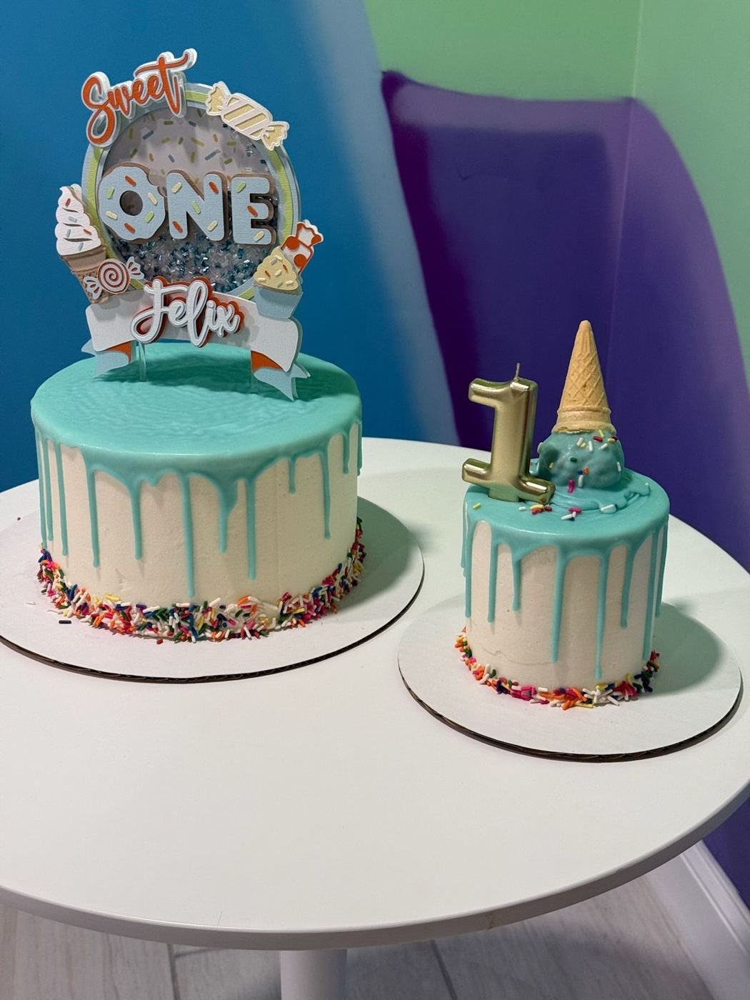
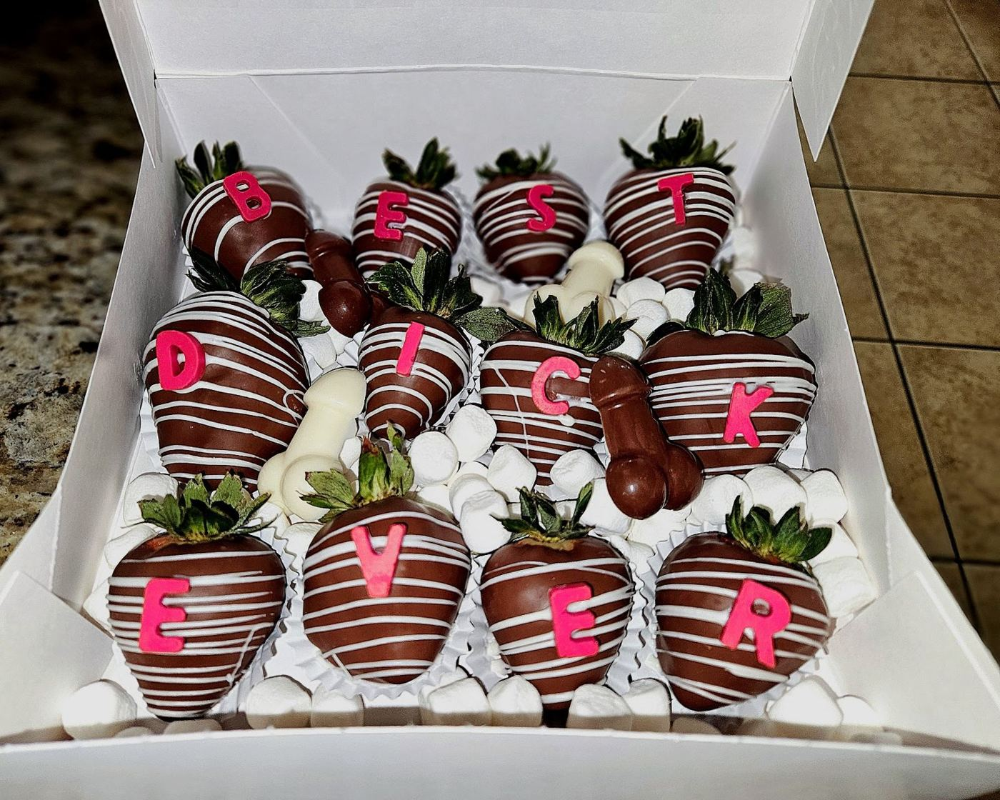
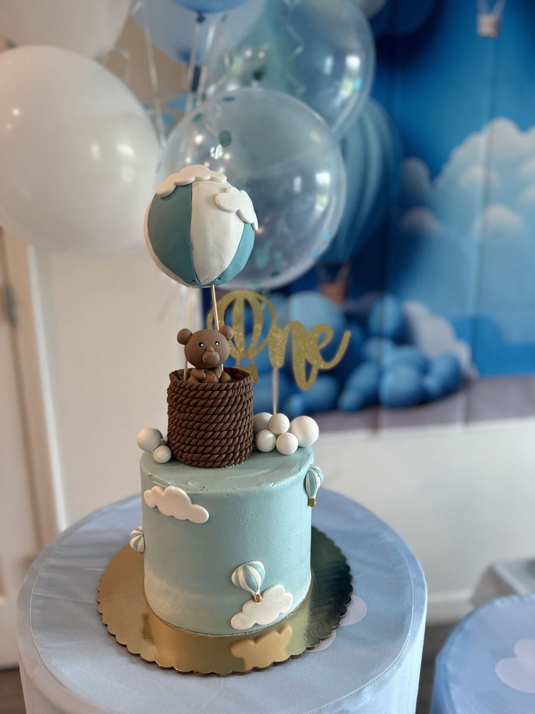

Sweet treats, your theme
Custom cakes, cake pops and party sweets by Nicole in Port St. Lucie, FL. 5.0★ from 102 Google reviews.
Plan my orderBrowse treats


Made to order
Themed cakesBirthdays, baby showers and “double digits” parties.
Cake popsBright, themed and party-ready.
Chocolate strawberriesDipped and lettered for the occasion.
Treat tablesCoordinated sweets that match your theme.
Party reviews
Bova's bakery is always improving and creating new and enticing sweets! They are so sweet and easy to get into contact with! If you're ever looking for a reliable dessert maker this is your girl right here!!!!
I got the tastiest cake & cake pops from Bovas Bakery & they were such a hit for my baby shower!! Everything tasted as good as it looked. Very happy with the turnout. Nicole does amazing work & was very responsive. Will definitely be ordering from her again!
I reached out to Bova’s Bakery for special treats for my baby shower, and she did not disappoint! I only had a rough idea of my theme, but she brought it to life perfectly with beautiful cake pops, rice crispy treats, and chocolate-covered pretzels. Everything looked amazing and tasted even better. I can’t wait for our next event to order another round of treats